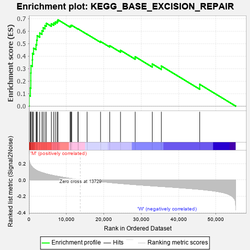
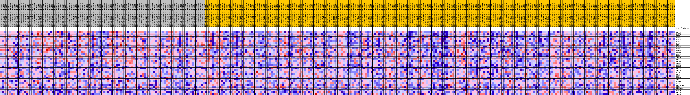
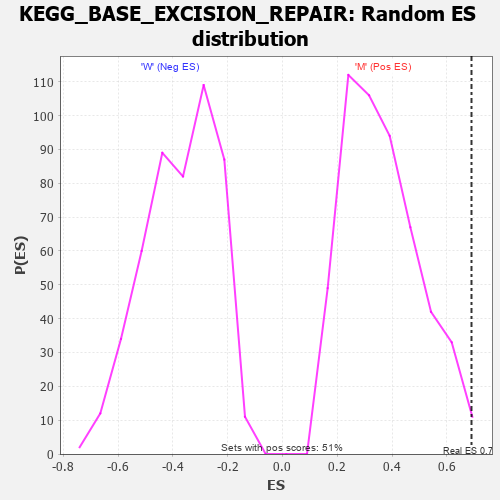

| Dataset | MUC16.MUC16.cls#M_versus_W.MUC16.cls#M_versus_W_repos |
| Phenotype | MUC16.cls#M_versus_W_repos |
| Upregulated in class | M |
| GeneSet | KEGG_BASE_EXCISION_REPAIR |
| Enrichment Score (ES) | 0.69031644 |
| Normalized Enrichment Score (NES) | 1.8995678 |
| Nominal p-value | 0.0116731515 |
| FDR q-value | 0.04091552 |
| FWER p-Value | 0.159 |

| PROBE | DESCRIPTION (from dataset) | GENE SYMBOL | GENE_TITLE | RANK IN GENE LIST | RANK METRIC SCORE | RUNNING ES | CORE ENRICHMENT | |
|---|---|---|---|---|---|---|---|---|
| 1 | NEIL3 | na | 36 | 0.256 | 0.0859 | Yes | ||
| 2 | PARP1 | na | 367 | 0.190 | 0.1443 | Yes | ||
| 3 | FEN1 | na | 479 | 0.181 | 0.2035 | Yes | ||
| 4 | POLE2 | na | 480 | 0.181 | 0.2647 | Yes | ||
| 5 | POLD2 | na | 521 | 0.178 | 0.3242 | Yes | ||
| 6 | POLB | na | 908 | 0.155 | 0.3695 | Yes | ||
| 7 | LIG1 | na | 937 | 0.153 | 0.4208 | Yes | ||
| 8 | UNG | na | 1219 | 0.141 | 0.4635 | Yes | ||
| 9 | PARP2 | na | 1872 | 0.120 | 0.4923 | Yes | ||
| 10 | POLE | na | 2065 | 0.115 | 0.5277 | Yes | ||
| 11 | PARP3 | na | 2183 | 0.112 | 0.5635 | Yes | ||
| 12 | PARP4 | na | 2863 | 0.099 | 0.5847 | Yes | ||
| 13 | POLE3 | na | 3467 | 0.089 | 0.6040 | Yes | ||
| 14 | PCNA | na | 3798 | 0.084 | 0.6267 | Yes | ||
| 15 | APEX1 | na | 4269 | 0.078 | 0.6446 | Yes | ||
| 16 | MPG | na | 4640 | 0.073 | 0.6628 | Yes | ||
| 17 | HMGB1 | na | 5979 | 0.059 | 0.6585 | Yes | ||
| 18 | APEX2 | na | 6610 | 0.053 | 0.6649 | Yes | ||
| 19 | POLD1 | na | 7067 | 0.048 | 0.6730 | Yes | ||
| 20 | POLD3 | na | 7521 | 0.045 | 0.6800 | Yes | ||
| 21 | NEIL2 | na | 7758 | 0.043 | 0.6903 | Yes | ||
| 22 | XRCC1 | na | 10980 | 0.018 | 0.6380 | No | ||
| 23 | LIG3 | na | 11192 | 0.016 | 0.6398 | No | ||
| 24 | MUTYH | na | 11214 | 0.016 | 0.6449 | No | ||
| 25 | POLL | na | 11434 | 0.015 | 0.6459 | No | ||
| 26 | NTHL1 | na | 13107 | 0.004 | 0.6168 | No | ||
| 27 | TDG | na | 13139 | 0.004 | 0.6175 | No | ||
| 28 | POLE4 | na | 15533 | -0.002 | 0.5750 | No | ||
| 29 | OGG1 | na | 19132 | -0.021 | 0.5170 | No | ||
| 30 | HMGB1P40 | na | 21592 | -0.032 | 0.4834 | No | ||
| 31 | MBD4 | na | 24471 | -0.044 | 0.4462 | No | ||
| 32 | HMGB1P1 | na | 28391 | -0.059 | 0.3951 | No | ||
| 33 | POLD4 | na | 32971 | -0.073 | 0.3370 | No | ||
| 34 | NEIL1 | na | 35396 | -0.081 | 0.3205 | No | ||
| 35 | SMUG1 | na | 45650 | -0.116 | 0.1741 | No |

